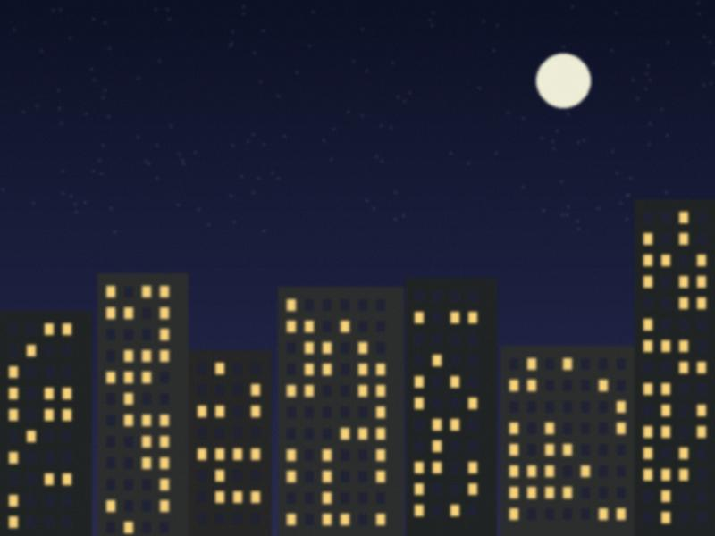

For a client I had to design the icon for the new coin. It is a circle. Everyone said: "It is a circle, how hard is it?" I made four circles. Round, flat, shiny, a half-sun. The client chose the fifth, which was the first one with a different outline.
A designer's job is mostly this: to make four versions, to be told the fifth is better, and to make the fifth.
The first email from abroad
12 Jul 2026 · 2 min read
Two years and nine months. That is how long it took, after the cut, until a client in another country wrote to me. A small firm that makes weather apps: "Hello, we saw your bus timetable page, do you have time?"
The email on my phone, next to my cup, my lamp and my cracked test phone. Everyone is there.
I replied in four minutes. Then I waited eleven minutes before sending, because my hands were shaking and I wanted to check the grammar. Spoiler: the grammar was fine.
Designing a sad number
17 May 2026 · 2 min read
Another bank screen: the monthly dollar limit. What colour is a limit? What word? "Limit" is cold. "Available" is untrue. "Remaining this month" is true but it's what you say to someone who is leaving.
We used a small bar, grey, with the number in plain black beside it. No red, no warnings. Red makes people feel it was their mistake.
I tested it on my mother. She read it aloud, slowly, put her hand on the phone and said: "Well. At least it's honest."
Two numbers on one screen
15 Mar 2026 · 2 min read
A bank app needs to show a dollar rate. This spring there are two: the official rate and the one on the street. How to show both without a fight on the screen?
My answer: show the one the bank can use for you, big, and say what it is. The other number does not need to be on the screen. People know it. You do not have to design every truth.
The client asked me to make the first number "a bit calmer". I made it thinner.
Screens that must work in the sun
31 Aug 2025 · 2 min read
My friend Bekzhan keeps cash machines alive and sent me five photos of screens that "cannot be read after 11 a.m." Direct sun at a bank machine in August turns a nice dark screen into a mirror with a few ghost words.
One of his machines, in a glass booth at the bazaar. The screen is a white rectangle with some hope on it.
What we did: big black text on white, no gradients, one thick line under the button that matters. It is the ugliest screen I ever designed and it is the only one that works at noon. I put it in my portfolio, second from the top.
A bus timetable for the village
25 May 2025 · 2 min read
The village bus at the final stop.
Side project: a timetable page for one village bus line, made with the driver. He doesn't use apps. So the page is one screen, big numbers, works without data once loaded, and the driver can change the times by sending a text message to a number. Twenty people a day use it. Best project of my year.
A blue I was asked to remove
23 Feb 2025 · 2 min read
A client asked me to take the dark blue out of an app. Not any blue, that one: a deep navy, with a white star in the icon. "In this month, it might look American."
I redrew the icon: a green square, a line, a dot. The client said it looked great. I thought it looked like a tractor.
It is a very short post. I do not have an opinion. A designer's opinion is a colour.
Iradi letters on small screens
10 Nov 2024 · 2 min read
Iradi has ü, ö, ı, ñ, ş, ç, ğ. On a small screen the dots and the cedilla disappear in the wrong font. We tested twelve fonts at 14 px on that bazaar phone. Four passed. The winner is boring, which in type is a compliment.
Also: "ı" without the dot is a different letter. If your font draws it with a dot, you just changed somebody's name.
The school diary
22 Sep 2024 · 2 min read
A school asked me for a diary app. Parents want to see marks. Teachers want to write them in the evening, at home, when the network is full. Pupils want nothing.
We did it in two screens.
Parent: today's marks, tomorrow's homework, one button "call the teacher".
Teacher: a table, like the paper journal, same columns, same order, so no one has to learn anything.
The first week a teacher sent a photo of her paper journal to ask if she could "send the app" the old way. We said yes. Then we put the photo into the app.
Designing for the slow evening
16 Jun 2024 · 2 min read

Talas at 9 p.m., when every flat is on the same network.
Every app I design is tested at 9 p.m., not 9 a.m. In the evening the network in Talas is full and every screen loads twice as slowly. So:
Text first, pictures later. The user can start reading while the photo is still coming.
No spinner without a reason. Tell people what you're waiting for.
Every button works offline and sends when the network comes back.
The test phone is a three-year-old model with a cracked screen, bought at the bazaar. It is the most honest member of the team.
Colour for the evening
18 Feb 2024 · 2 min read
Warm greys, not cold ones. In the evening, in a flat with one weak lamp, a cold grey looks like a hospital. A warm one looks like a kitchen.
Test I do every time: look at the screen in the hallway of my parents' flat, at 9 p.m., with the bulb my mother bought in 2015. If you can still read the grey text, it passes. Most don't pass. Mother's bulb is a very strict reviewer.
No fonts, no cloud
20 Oct 2023 · 2 min read
A week without the foreign internet. Our design tools live on someone else's servers. Fonts: foreign servers. Icons: foreign servers. Colour palettes: you guessed.
What I did on Monday: found an old copy of the font library on a hard drive, copied it to my phone, and sent my colleague the files by Bluetooth, like in 2008. It worked. Lesson: anything you rely on, keep a copy of in your drawer.
That is all I will say about this month.
Logos for every toi hall
30 Apr 2023 · 2 min read
My first paid job, 2011: a logo for a toikana. They wanted "something gold, with a crown, and also modern". I made a gold crown on a navy square. Modern was the square.
A sign I drew, on the roof of a hall on the central avenue. 12 years of weather and it is still gold-ish.
After that every hall in Talas came to me, because wedding halls talk to each other. Altyn Ordo, Dastan, a place with a fountain that never worked. Lesson one: the client always wants a crown. Give them the crown, then fix everything around it.